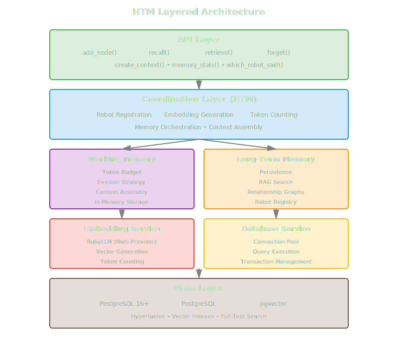
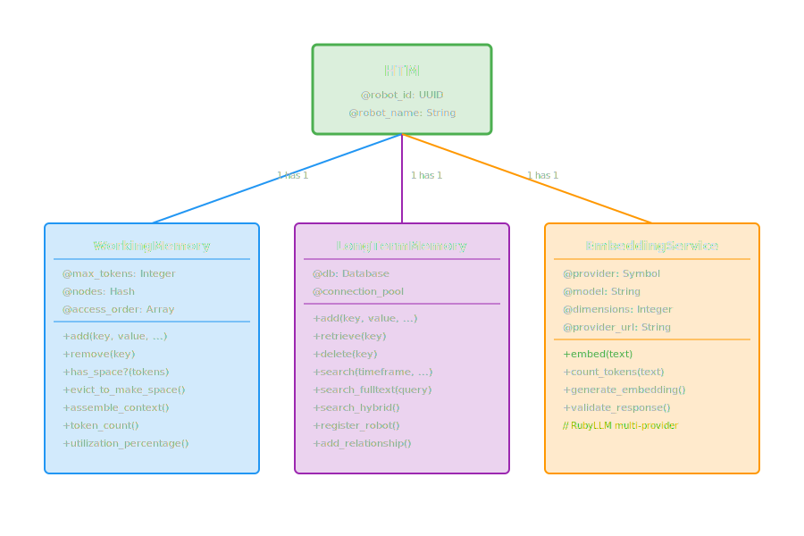
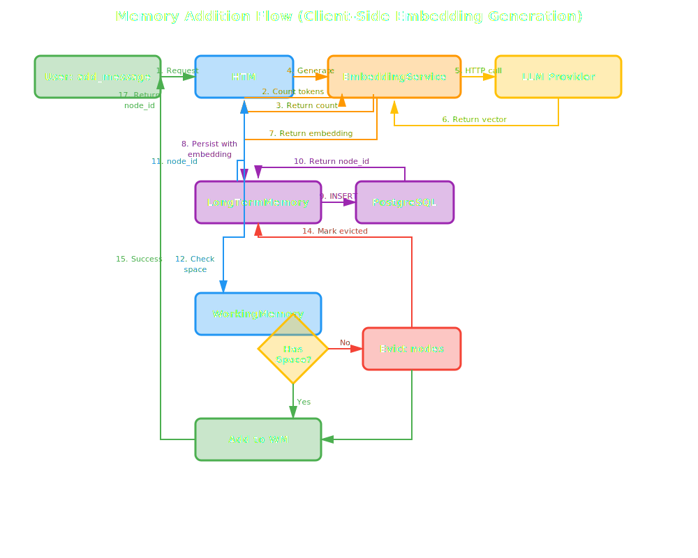
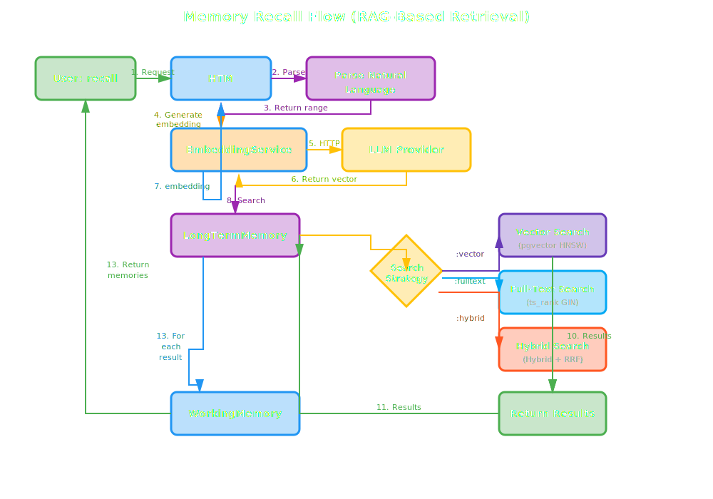
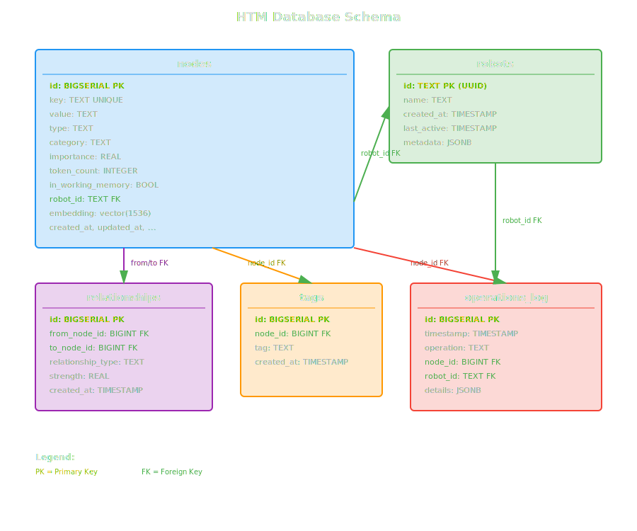

Detailed Architecture¶
This document provides a comprehensive deep dive into HTM's system architecture, component interactions, data flows, database schema, and performance characteristics.
Table of Contents¶
- System Architecture
- Component Diagrams
- Data Flow Diagrams
- Memory Lifecycle
- Database Schema
- Technology Stack
- Performance Characteristics
- Scalability Considerations
System Architecture¶
HTM implements a layered architecture with clear separation of concerns between presentation (API), business logic (memory management), and data access (database).
Architecture Layers¶

Component Responsibilities¶
API Layer (HTM class)¶
- Public interface for all memory operations
- Robot identification and initialization
- Request routing to appropriate subsystems
- Response aggregation and formatting
- Activity logging and statistics
Coordination Layer¶
- Robot Management: Registration, activity tracking, metadata
- Embedding Coordination: Generate embeddings for new memories and search queries
- Memory Orchestration: Coordinate between working and long-term memory
- Context Assembly: Build LLM context strings from working memory
- Token Management: Count tokens and enforce limits
Memory Management Layer¶
Working Memory¶
- In-Memory Store: Fast Ruby Hash-based storage
- Token Budget: Enforce maximum token limit (default 128K)
- Eviction Policy: Hybrid importance + recency eviction
- Access Tracking: LRU-style access order for recency
- Context Assembly: Three strategies (recent, important, balanced)
Long-Term Memory¶
- Persistence: Write all memories to PostgreSQL
- RAG Search: Vector + temporal + full-text search
- Relationship Management: Store and query node relationships
- Robot Registry: Track all robots using the system
- Eviction Marking: Mark which nodes are in working memory
Services Layer¶
Embedding Service¶
- Client-Side Generation: Generate embeddings before database insertion
- Token Counting: Estimate token counts for strings
- Model Management: Handle different models per provider
- Provider Support: Ollama (default) and OpenAI
Architecture Change (October 2025)
Embeddings are generated client-side in Ruby before database insertion. This provides reliable, cross-platform operation without complex database extension dependencies.
Database Service¶
- Connection Pooling: Manage PostgreSQL connections
- Query Execution: Execute parameterized queries safely
- Transaction Management: ACID guarantees for operations
- Error Handling: Retry logic and failure recovery
Data Layer¶
- PostgreSQL: Relational storage with ACID guarantees
- TimescaleDB: Time-series optimization and compression
- pgvector: Vector similarity search with HNSW
- pg_trgm: Fuzzy text matching for search
Component Diagrams¶
HTM Core Components¶

Data Flow Diagrams¶
Memory Addition Flow¶
This diagram shows the complete flow of adding a new memory node to HTM with client-side embedding generation.
Architecture Note
With client-side generation (October 2025), embeddings are generated in Ruby before database insertion. This provides reliable, cross-platform operation.

Memory Recall Flow¶
This diagram illustrates the RAG-based retrieval process with client-side query embeddings.
Architecture Note
With client-side generation, query embeddings are generated in Ruby before being passed to SQL for vector similarity search.

Context Assembly Flow¶
This diagram shows how working memory assembles context for LLM consumption using different strategies.

Memory Lifecycle¶
Node States¶
A memory node transitions through several states during its lifetime in HTM:

Eviction Process¶
When working memory reaches its token limit, the eviction process runs to free up space:

Database Schema¶
Entity-Relationship Diagram¶

Table Details¶
nodes¶
The main table storing all memory nodes with vector embeddings, metadata, and timestamps.
| Column | Type | Description |
|---|---|---|
id |
BIGSERIAL | Primary key, auto-incrementing |
key |
TEXT | Unique identifier for node (user-defined) |
value |
TEXT | Content of the memory |
type |
TEXT | Memory type (fact, context, code, preference, decision, question) |
category |
TEXT | Optional category for organization |
importance |
REAL | Importance score (0.0-10.0, default 1.0) |
created_at |
TIMESTAMP | Creation timestamp |
updated_at |
TIMESTAMP | Last update timestamp |
last_accessed |
TIMESTAMP | Last access timestamp |
token_count |
INTEGER | Number of tokens in value |
in_working_memory |
BOOLEAN | Whether currently in working memory |
robot_id |
TEXT | Foreign key to robots table |
embedding |
vector(1536) | Vector embedding for semantic search |
Indexes:
- Primary key on
id - Unique index on
key - B-tree indexes on
created_at,updated_at,last_accessed,type,category,robot_id - HNSW index on
embeddingfor vector similarity - GIN indexes on
to_tsvector('english', value)for full-text search - GIN trigram index on
valuefor fuzzy matching
robots¶
Registry of all robots using the HTM system.
| Column | Type | Description |
|---|---|---|
id |
TEXT | Primary key, UUID v4 |
name |
TEXT | Human-readable robot name |
created_at |
TIMESTAMP | Registration timestamp |
last_active |
TIMESTAMP | Last activity timestamp |
metadata |
JSONB | Flexible robot configuration |
relationships¶
Graph edges connecting related nodes.
| Column | Type | Description |
|---|---|---|
id |
BIGSERIAL | Primary key |
from_node_id |
BIGINT | Source node foreign key |
to_node_id |
BIGINT | Target node foreign key |
relationship_type |
TEXT | Type of relationship (e.g., "related_to", "follows") |
strength |
REAL | Relationship strength (0.0-1.0) |
created_at |
TIMESTAMP | Creation timestamp |
Indexes:
- B-tree indexes on
from_node_idandto_node_id - Unique constraint on
(from_node_id, to_node_id, relationship_type)
tags¶
Flexible categorization system for nodes.
| Column | Type | Description |
|---|---|---|
id |
BIGSERIAL | Primary key |
node_id |
BIGINT | Foreign key to nodes |
tag |
TEXT | Tag name |
created_at |
TIMESTAMP | Creation timestamp |
Indexes:
- B-tree index on
node_id - B-tree index on
tag - Unique constraint on
(node_id, tag)
operations_log¶
Audit trail of all memory operations for debugging and replay.
| Column | Type | Description |
|---|---|---|
id |
BIGSERIAL | Primary key |
timestamp |
TIMESTAMP | Operation timestamp |
operation |
TEXT | Operation type (add, retrieve, recall, forget, evict) |
node_id |
BIGINT | Foreign key to nodes (nullable) |
robot_id |
TEXT | Foreign key to robots |
details |
JSONB | Flexible operation metadata |
Indexes:
- B-tree indexes on
timestamp,robot_id,operation
Technology Stack¶
Core Technologies¶
| Technology | Version | Purpose | Why Chosen |
|---|---|---|---|
| Ruby | 3.2+ | Implementation language | Readable, expressive, mature ecosystem |
| PostgreSQL | 16+ | Relational database | ACID guarantees, rich extensions, production-proven |
| TimescaleDB | 2.13+ | Time-series extension | Hypertable partitioning, automatic compression |
| pgvector | 0.5+ | Vector similarity | HNSW indexing, PostgreSQL-native, fast approximate search |
| pg_trgm | - | Fuzzy text search | Built-in PostgreSQL extension for trigram matching |
Ruby Dependencies¶
# Core dependencies
gem 'pg', '~> 1.5' # PostgreSQL client
gem 'pgvector', '~> 0.2' # Vector operations
gem 'connection_pool', '~> 2.4' # Connection pooling
gem 'faraday', '~> 2.7' # HTTP client (for embedding APIs)
# Optional dependencies
gem 'tiktoken_ruby', '~> 0.0.6' # Token counting (OpenAI-compatible)
Embedding Providers¶
Client-Side Generation
Embeddings are generated client-side in Ruby before database insertion. This provides reliable, cross-platform operation.
| Provider | Models | Dimensions | Speed | Cost |
|---|---|---|---|---|
| Ollama (default) | nomic-embed-text, mxbai-embed-large, all-minilm | 384-1024 | Fast (local HTTP) | Free |
| OpenAI | text-embedding-3-small, text-embedding-ada-002 | 1536 | Fast (API) | $0.0001/1K tokens |
Performance Characteristics¶
Latency Benchmarks¶
Based on typical production workloads with 10,000 nodes in long-term memory (client-side embeddings):
Performance Characteristics
Client-side embedding generation provides reliable, debuggable operation. Latency includes HTTP call to Ollama/OpenAI for embedding generation.
| Operation | Median | P95 | P99 | Notes |
|---|---|---|---|---|
add_message() |
50ms | 110ms | 190ms | Client-side embedding generation + insert |
recall() (vector) |
80ms | 140ms | 230ms | Client-side query embedding + vector search |
recall() (fulltext) |
30ms | 60ms | 100ms | GIN index search (no embedding needed) |
recall() (hybrid) |
110ms | 190ms | 330ms | Client-side embedding + hybrid search |
retrieve() |
5ms | 10ms | 20ms | Simple primary key lookup |
create_context() |
8ms | 15ms | 25ms | In-memory sort + join |
forget() |
10ms | 20ms | 40ms | DELETE with cascades |
Performance Optimization
- Use connection pooling (included by default)
- Add database indexes for common query patterns
- Consider read replicas for query-heavy workloads
- Monitor HNSW build time for large embedding tables
Throughput¶
| Workload | Throughput | Resource Usage |
|---|---|---|
| Add nodes | 500-1000/sec | CPU-bound (embeddings) |
| Vector search | 2000-5000/sec | I/O-bound (database) |
| Full-text search | 5000-10000/sec | I/O-bound (database) |
| Context assembly | 10000+/sec | Memory-bound (working memory) |
Storage¶
| Component | Size Estimate | Compression |
|---|---|---|
| Node (text only) | ~1KB average | None |
| Node (with embedding) | ~7KB (1536 dims × 4 bytes) | TimescaleDB compression (70-90%) |
| Indexes | ~2x data size | Minimal |
| Operations log | ~200 bytes/op | TimescaleDB compression |
Example: 100,000 nodes with embeddings:
- Raw data: ~700 MB
- With indexes: ~2.1 GB
- With compression (after 30 days): ~300 MB
Scalability Considerations¶
Vertical Scaling Limits¶
| Resource | Limit | Mitigation |
|---|---|---|
| Working Memory (RAM) | ~2GB per robot process | Use smaller working_memory_size, evict more aggressively |
| PostgreSQL Connections | ~100-200 (default) | Connection pooling, adjust max_connections |
| Embedding API Rate Limits | Provider-dependent | Implement rate limiting, use local models |
| HNSW Build Time | O(n log n) on large tables | Partition tables by timeframe |
Horizontal Scaling Strategies¶
Multi-Process (Single Host)¶
- Each robot process has independent working memory
- All processes share single PostgreSQL instance
- Connection pooling prevents connection exhaustion
Multi-Host (Distributed)¶
- Option 1: Shared Database
- All hosts connect to central PostgreSQL
- Read replicas for query scaling
-
Write operations to primary only
-
Option 2: Sharded Database
- Partition by
robot_idor timeframe - Requires coordination for cross-shard queries
- More complex but scales writes
Read Scaling¶
- Add PostgreSQL read replicas
- Route
recall()andretrieve()to replicas - Primary handles writes only
- TimescaleDB native replication support
Consistency Considerations
Read replicas may lag primary by seconds. For strong consistency requirements, query primary database.
Future Scaling Enhancements¶
- Redis-backed Working Memory: Share working memory across processes
- Horizontal Partitioning: Shard
nodestable byrobot_idor time ranges - Caching Layer: Add Redis cache for hot nodes
- Async Embedding Generation: Queue embedding jobs for batch processing
- Vector Database Migration: Consider specialized vector DB (Pinecone, Weaviate) at massive scale
Related Documentation¶
- Architecture Index - Architecture overview and component summary
- Two-Tier Memory System - Working memory and long-term memory deep dive
- Hive Mind Architecture - Multi-robot shared memory design
- API Reference - Complete API documentation
- Architecture Decision Records - Decision history